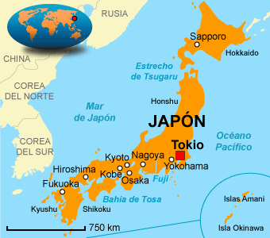

Localización
Tokio se encuentra al este del país Nipon.

Tokio se encuentra al este del país Nipon.
Es el templo mas antiguo de la ciudad de Tokio, due fundado en el año 645. El templo esta dedicado al simbolo del budismo el bodisatva Kannon. El templo fue bombardeado en la segunda guerra mundial y posteriormente reconstruido.
Hay diversos miradores en Tokio algunos de los mas conocidos son: El mirador de la torre Mori, el mirador de la torre Tokio y el mirador de la Tokyo Skytree. Desde estos miradores podras apreciar la belleza de la ciudad desde arriba.
Si te gustan los videjuegos recomendamos ir a la tienda oficial de Nintendo en Tokio donde encontraras articulos de todas las sagas de la famosa compañia.